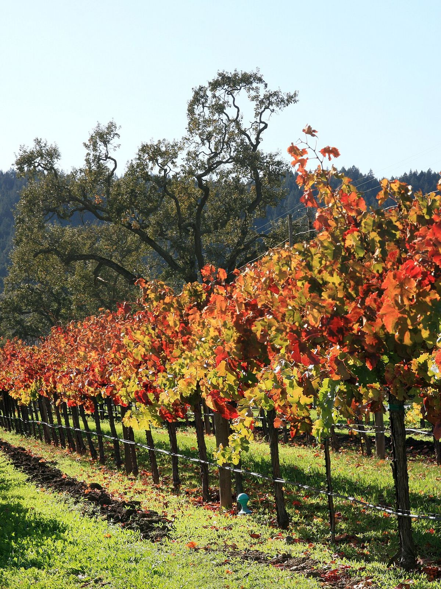
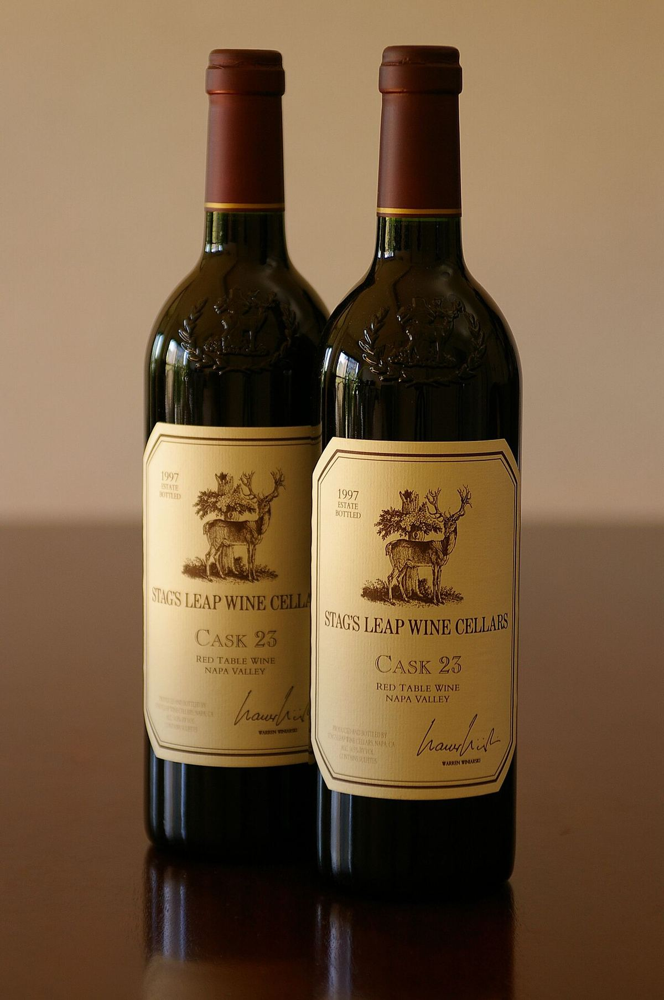

RED
Home › United States › Napa Valley
AVANapa Valley
A valley north of San Francisco Bay and the most famous wine region in the United States, known above all for its Cabernet Sauvignon. It was the first AVA recognised in California.

History
Commercial viticulture in Napa developed from the mid-nineteenth century. Charles Krug founded his winery in 1861 and, over the following decades, houses such as Beringer and Inglenook, founded by the Finn Gustave Niebaum, were established. Phylloxera and, above all, Prohibition interrupted that momentum, although a few wineries, such as Beaulieu Vineyard, survived by making sacramental wine. After the Second World War, the winemaker André Tchelistcheff helped to modernise winemaking, and in 1966 Robert Mondavi opened in Oakville the first major new winery in the valley since Prohibition. In 1968 the county created the Agricultural Preserve, a zoning measure that protects farmland from urban development. The 1976 Judgment of Paris, at which a Cabernet from Stag’s Leap Wine Cellars and a Chardonnay from Chateau Montelena stood out, made the valley world-famous. Napa Valley was recognised as an AVA in 1981.
Climate and soils
The valley, some 50 kilometres long, opens to the south onto San Pablo Bay and closes to the north beneath Mount Saint Helena. Fogs and breezes rising from the bay cool the south, while the north, towards Calistoga, is distinctly warmer. The slopes of the Mayacamas Mountains to the west and the Vaca Mountains to the east often sit above the fog and have a different temperature pattern from the valley floor. Soils are highly varied: alluvial soils and gravel fans on the valley floor, and poorer, stonier volcanic or weathered-rock soils in the mountains.
Sub-regions
Within Napa Valley there are numerous nested AVAs, among them Oakville, Rutherford, Stags Leap District, St. Helena, Calistoga, Yountville, Oak Knoll District, Coombsville and, in the mountains, Howell Mountain, Mount Veeder, Spring Mountain District, Diamond Mountain District and Atlas Peak. Los Carneros, to the south, is shared with Sonoma and is one of the coolest areas, valued for Chardonnay, Pinot Noir and sparkling wine.
Styles
Cabernet Sauvignon is the emblematic variety, alone or in Bordeaux-style blends with Merlot, Cabernet Franc, Petit Verdot and Malbec, and it usually gives reds with ripe fruit, a broad body and barrel ageing. Chardonnay, Sauvignon Blanc, Merlot and Zinfandel are also made. As in every AVA, there are no rules on ageing or grape varieties: each winery decides its own style.
Wines · Napa Valley
RED
Cakebread Cellars Napa Valley Cabernet Sauvignon
See profile & where to buy ↗WHITE
Cakebread Cellars Napa Valley Chardonnay
See profile & where to buy ↗WHITE
Cakebread Cellars Napa Valley Sauvignon Blanc
See profile & where to buy ↗RED
Napa Valley Cabernet Sauvignon
See profile & where to buy ↗RED
Special Selection Cabernet Sauvignon
See profile & where to buy ↗WHITE
Chateau Montelena Chardonnay
See profile & where to buy ↗RED
Chateau Montelena Estate Cabernet Sauvignon
See profile & where to buy ↗RED
Napa Valley Merlot
See profile & where to buy ↗WHITE
Napa Valley Sauvignon Blanc
See profile & where to buy ↗RED
Three Palms Vineyard Merlot
See profile & where to buy ↗RED
Joseph Phelps Napa Valley Cabernet Sauvignon
See profile & where to buy ↗RED
Insignia
See profile & where to buy ↗RED
Overture
See profile & where to buy ↗RED
Opus One
See profile & where to buy ↗WHITE
Napa Valley Fumé Blanc
See profile & where to buy ↗RED
The Reserve To Kalon Vineyard Cabernet Sauvignon
See profile & where to buy ↗RED
Napa Valley Cabernet Sauvignon
See profile & where to buy ↗RED
Artemis Cabernet Sauvignon
See profile & where to buy ↗RED

Cask 23 Cabernet Sauvignon
See profile & where to buy ↗RED
S.L.V. Cabernet Sauvignon
See profile & where to buy ↗RED